$$qf_commondoc_header.start$$ $$qf_commondoc_header.end$$
$$invisibleref:GANSEN08:Gansen A (2008) Chromatin at the Nanolevel. Dissertational Thesis. Available at: http://archiv.ub.uni-heidelberg.de/volltextserver/8342/1/Dissertation_Gansen.pdf $$
Introduction
Burst Analysis
This tool allows to read data from single-photon counting (or time-correlated single-photon counting, TCSPC) experiments. Then it tries to detect fluorescence bursts from single molecules passing the focus of the microscope, used for detection. This analysis assumes that two detection channels ("green"/"red") are used. The intensities in these two channels can then be used to calculate FRET-properties of the observed molecules. For each such burst, several properties are measured:
- when did the burst occur $(t_\text{burst})$
- burst duration $(\Delta t_\text{burst})$
- accumulated photon count $(N_g, N_r)$ during the burst in two detection channels (green/red)
- the photon countrate during a burst: $(\mbox{CR}=(N_g+N_r)/\Delta t_\text{burst})$
These are used to calculate additional burst properties together with additional data:
- background count-rates $(B_g,B_r)$ in the two channels
- crosstalk-coefficient $(\kappa_{gr})$ from the green into the red channel
- direct excitation rate $(f_{direct})$ of the donor fluorophore with the excitation wavelength
- FRET detection factor $[ \gamma=\frac{\eta_A\phi_A}{\eta_D\phi_D}, ]$where $(\eta_A,\eta_D)$ are detection efficiencies in the two channels and $(\phi_A,\phi_D)$ are the quantum yields of the acceptor and donor fluorophore.
The major burst-property is the FRET proximity ratio:
$[ P=\frac{N_A}{N_A+N_D} ]$
with the background-, crosstalk- and direct-excitation-corrected number of photons in the acceptor- and donor-channels:
$[N_D=N_g-B_g\cdot\Delta t_\text{burst}]$
$[N_A=N_r-(B_r+f_\text{direct})\cdot\Delta t_\text{burst}-\kappa_{gr}\cdot N_D]$
If in addition, the detection factor $(\gamma)$ is known, also the actual FRET-efficiency can be calculated
$[ E=\frac{N_A}{N_A+\gamma\cdot N_B}=\frac{1}{1+\gamma\cdot\frac{1-P}{P}}, ]$
which can be recalculated into a distance $(r_{DA})$ between donor and acceptor, if the Förster-radius $(R_0)$ of the fluorophore pair is known:
$[E(r_{DA})=\frac{1}{1+\left(\frac{r_{DA}}{R_0}\right)^6}\ \ \ \ \ \Rightarrow\ \ \ \ \ r_{DA}(E)=R_0\cdot\left(\frac{1}{E}-1\right)^{1/6}]$
Burst Search
In order to perform a burst analysis, the bursts have to be identified first. This is done by a search algorithm, which relies on the interphoton-time (IPT) $(\delta t_i)$ between two consecutive photons $(i)$ and $(i+1)$. Inside bursts, the photons are spaced more closely, than during section with background only. This can be seen in the following interphoton time trace:
 In this image, you can see three bursts, at approximately 1.04s, 1.23s and 1.46s. The burst search algorithm identifies bursts with the following properties:
In this image, you can see three bursts, at approximately 1.04s, 1.23s and 1.46s. The burst search algorithm identifies bursts with the following properties:
- a bursts consists of at least $(N_{burst-min})$ photons
- the interphoton times inside a burst habe to be shorter than a maximum value of $(\mbox{IPT}_{burst-max})$.
- A burst has a maximum length of $(\Delta t_\text{burst-max})$
LEE-Filtering
The algorithm performance can be optimized, if the IPTs are filtered with a LEE-filter before applying the burst search. The LEE-filter smoothes out outlierst from the data. The IPT-trace above will look as follows if LEE-filtered:
 The LEE-filter works as follows:
The LEE-filter works as follows:
Each IPT is transformed:
$[ \delta t_i'=\overline{\delta t}_i+(\delta t_i-\overline{\delta t}_i)\cdot\frac{\sigma_i^2}{\sigma_i^2+\sigma_0^2} ]$
with:
$[\overline{\delta t}_i=\frac{1}{2m+1}\cdot\sum_{j=-m}^m\delta t_{i+j}]$
$[\sigma_i^2=\frac{1}{2m+1}\cdot\sum_{j=-m}^m(\delta t_{i+j} - \overline{\delta t}_{i+j})^2.]$
The LEE filter is then characterized by its two parameters:
- the window size $(M_{LEE}=2m+1)$. The following image shows the influence of this parameter on the result of the filter: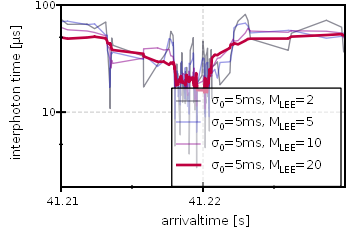
- the parameter $(\sigma_0)$, which is usually set to $(\sigma_0=5\;\mathrm{ms})$. This parameter has only a minor influence of the result of the filter:
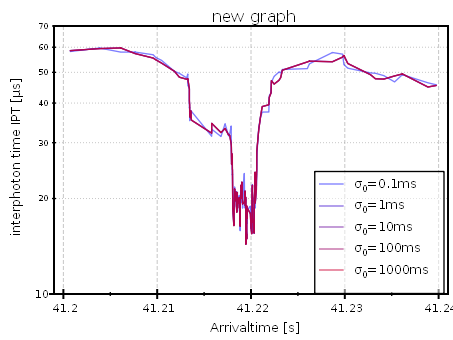
Usage/Tutorial
$$startbox_see$$
There is a full tutorial available for this tool. It gives a detailed walk-through of a complete spFRET evaluation in QuickFit $$version$$.
$$endbox$$
Basic Workflow
You can start the TCSPC Burst Analyzer with the mainwindow menu entry Data Items | Insert Raw Data | TCSPC Burst Analyzer, or the RDR-button on the mainwindow:
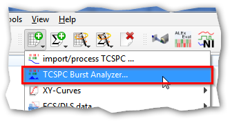
The Burst Analyzer dialog is split into three tabs that have to be filled in step-wise.
Tab: 1. File Selection
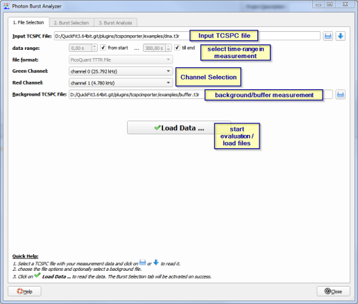
Here you can select an input TCSPC file, as well as an optional TCSPC-measurement of the buffer that is used to characterize the background. You can also choose which channel in the file to use for the green and red evaluation channel. Finally click on
 to read in the sepcified datasets. $$note: If you change any of the settings above lateron, you will have to click this button again!$$
to read in the sepcified datasets. $$note: If you change any of the settings above lateron, you will have to click this button again!$$
Tab: 2. Burst Search
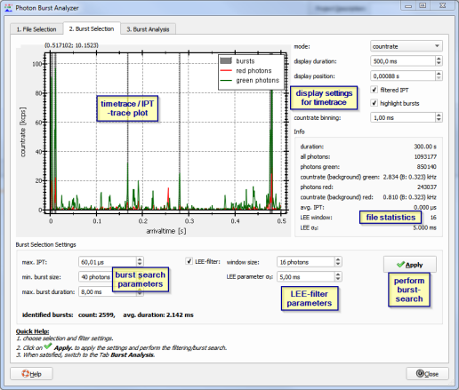
In this tab, you can configure the burst-search algorithm and are presented with the first results from the burst search (e.g. the number of bursts and a timetrace-view of the measurement in which the bursts are marked. You can also choose to use a LEE-filter (see above) before performing the actual burst search. After changing any of the burst-search parameters, you will have to click on
Now the filter and burst search will be applied, the graph will be updated and below the editing widgets, the number of found bursts will be displayed:
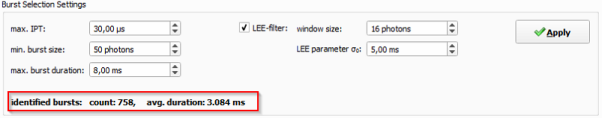
Also you can now move on to the third tab, which is deaktivated until a burst search is performed.
Tab: 3. Burst Analysis
 This tab analyzes the data that was extracted from the single bursts (mainly the number of photons, countrate and proximity ration, see above). The data is presented as histograms and correlation plots. In addition you can specify the parameters of the histograms (i.e. the bin width) and filter the bursts according to their average countrate. A click on "Apply" recalculates the histograms after changing any parameter (except the countrate filters!). $$note:The buttons 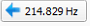 next to the background edit widgets allow to set the background intensity to the given value, which was extracted from the buffer measurement, if one was applied!$$
On the rhs of the window, a list of basic statistical figures about the sample is given (and updated after a click on "Apply"):
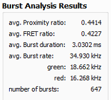
This tab analyzes the data that was extracted from the single bursts (mainly the number of photons, countrate and proximity ration, see above). The data is presented as histograms and correlation plots. In addition you can specify the parameters of the histograms (i.e. the bin width) and filter the bursts according to their average countrate. A click on "Apply" recalculates the histograms after changing any parameter (except the countrate filters!). $$note:The buttons 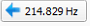 next to the background edit widgets allow to set the background intensity to the given value, which was extracted from the buffer measurement, if one was applied!$$
On the rhs of the window, a list of basic statistical figures about the sample is given (and updated after a click on "Apply"):
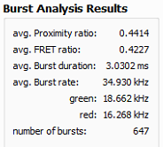
Finally you can store the results, as table RDRs in the project or as data-files (CSV, Excel, Matlab, ...), where each row is one burst and the columns contain the different burst parameters:
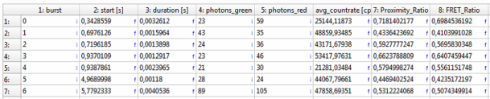
This is done with the buttons
These store the tables either to a table RDR in the current project (including updatable histograms!), or to a data-file (e.g. CSV, Matlab or Excel).
$$note:If you want to compare different settings of the analysis parameters, you can set the initial parameters and then store the results. Then set new parameters and store again. This way you get several tables in the project, or several files on the harddisk that you can compare. The previoulsy stored results will NOT be overwritten updates (autonatically).$$
Multi-file Workflow
The burst analyzer also allows to combine several files into one evaluation. To do so:
- Follow the standard workflow (see above) for the first file. When saving the results in the final step, use the button
Then a new list Multi-File Store will open on the rhs of the dialog:
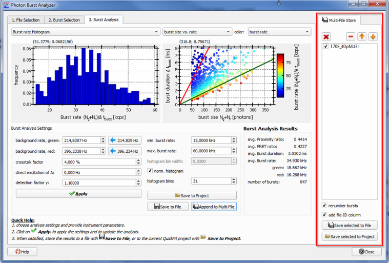
This list is initialized with an entry for the current file and can be edited with the buttons above the list:
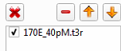
These allow to clear the list, delete the selected entry, or move the selected entry up or down.
- Return to the first tab "1. File Selection", select a new "Input TCSPC file", set all other settings and load it with
Then follow the rest of the evaluation steps, as for the first file until you can save the results.
- Click on the button
again and a second entry will be added to the Multi-File Store:
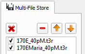
Repeat these steps for all files that make up your measurement.
- Finally you can store a table with the properties of all bursts (and a numeric file-id in one column), by clicking on the buttons below the Multi-File Store list:
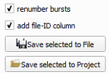
these will again create either a file with the table as CSV/Excel/Matlab/..., or a table RDR in the current project (including updatable histograms!). The two check-boxes above the buttons allow to set whether:
- the bursts should be renumbered. If checked, each bursts receives a continuous numebr that is unique over all files, otherwise the burst enumeration restarts at 0 for each file.
- a columne with a file-ID (as an integer number) should be added to the table (as alast column).
$$note:The histograms in the Burst-Analysis tab always only show the results of the current file, not the histograms over all files. To view these:
- Click on after evaluating all files
- Double-click the new entry in the project:
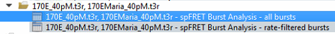
- In the table RDR-editor window, choose "Plots" and then the histogram you are interested in.
$$
Fitting Distributions to the spFRET histograms
You can use the General Least Squares Curve-Fit plugin of QuickFit to fit a model function to the spFRET histograms obtained from this tool. To do so:
- Add a new fit to the project (Data Items | Insert Evaluation | General Curve Fitting | Histogram Fitting):
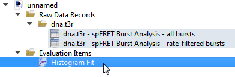
open the curve-fit editor with a double-click on the project entry and choose an appropriate model (e.g. $$fitfunction:name:gen_multigaussian_sqrte$$):
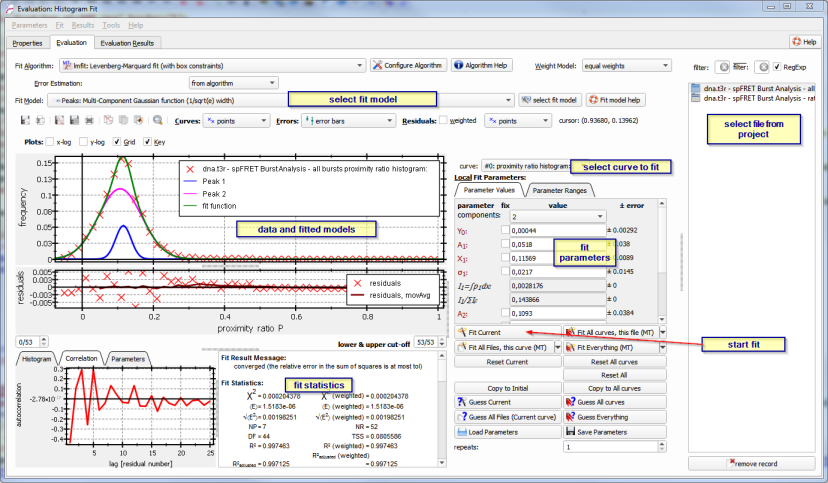
- Now select one of the tables (1) that the Burst Analyzer created and select the histogram (2) that you want to fit:
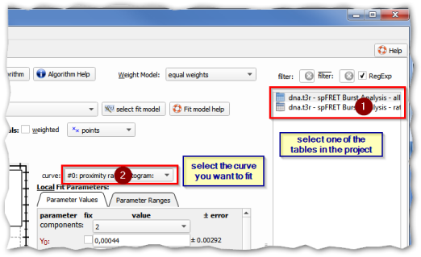
- Now you can edit the parameters of the fit function so you have good starting values. To estimate initial values, right-click into the plot to set a parameter based on the mouse-position (chose the submenu Estimate Parameters ... from the context-menu, or use the button Guess Current to automatically guess initial parameters (if it is provided by the chosen fit model). FInally use Fit Current to fit the model to the dataset. You can evaluate the quality of fit with the residuals and the fit statistics numbers and plots at the bottom of the dialog.
$$startbox_see$$
The documentation of the General Least Squares Curve-Fit plugin also contains detailed tutorials on how to use this plugin!
$$endbox$$
References
$$references$$